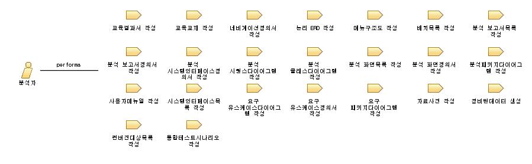

| Role: 분석자 |
 |
|
Relationships
 |
||
| Additionally Performs | ||
|---|---|---|
| Modifies |
|
|
| Process Usage | ||
Main Description
고객의 비즈니스 요구를 완벽히 이해하여, 이를 기반으로 시스템에 구현되어야할 기능 요구사항의 명세를 표준 분석표기법을 써서 정의하고, 요구명세의 완전성, 정확성, 일돤성 등 품질을 체계적으로 분석 및 보증할 수 있는 사람 |
Relationships
Main Description
|
||||||||||||||||||